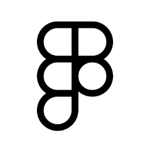
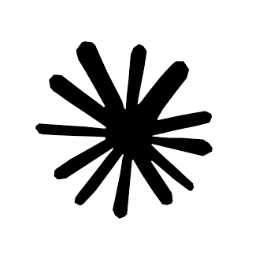
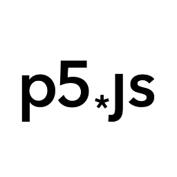
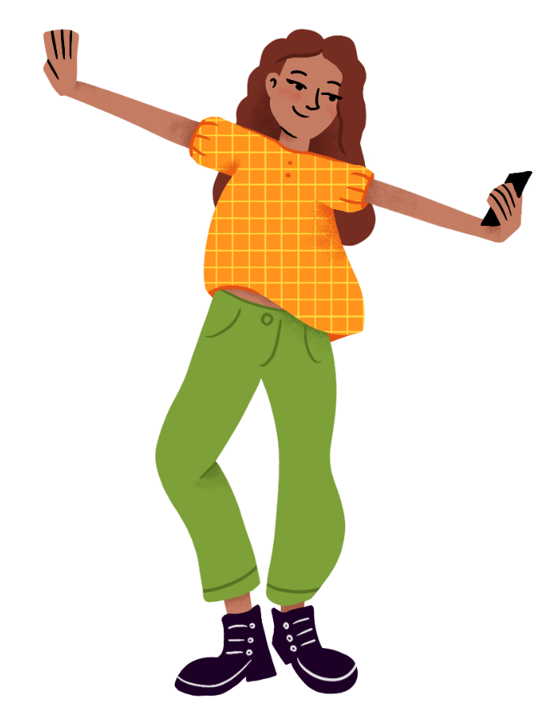
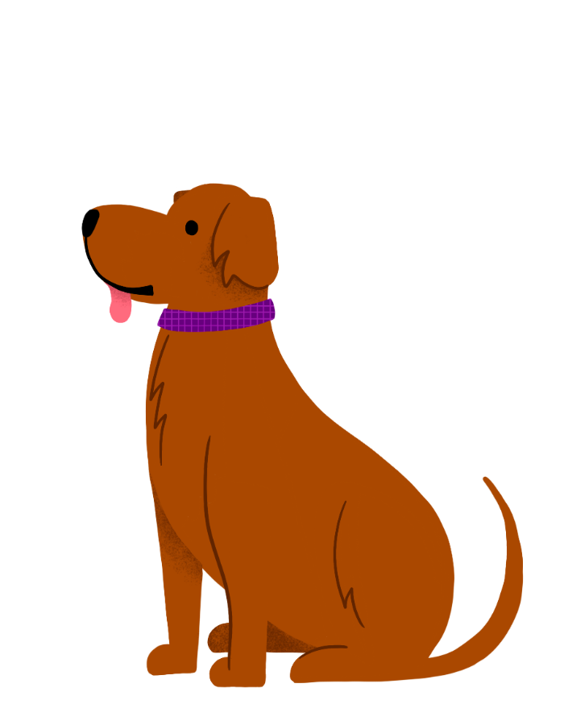
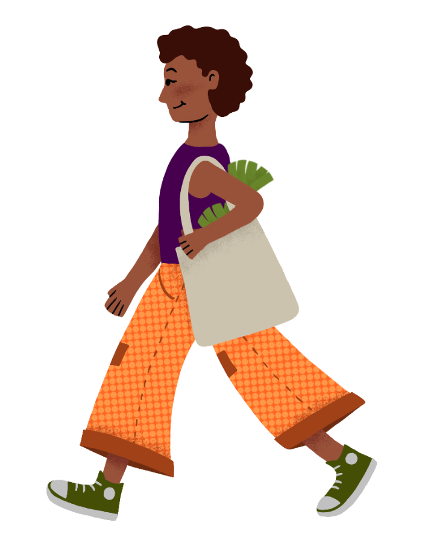
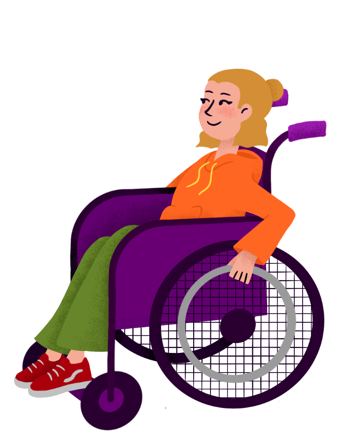
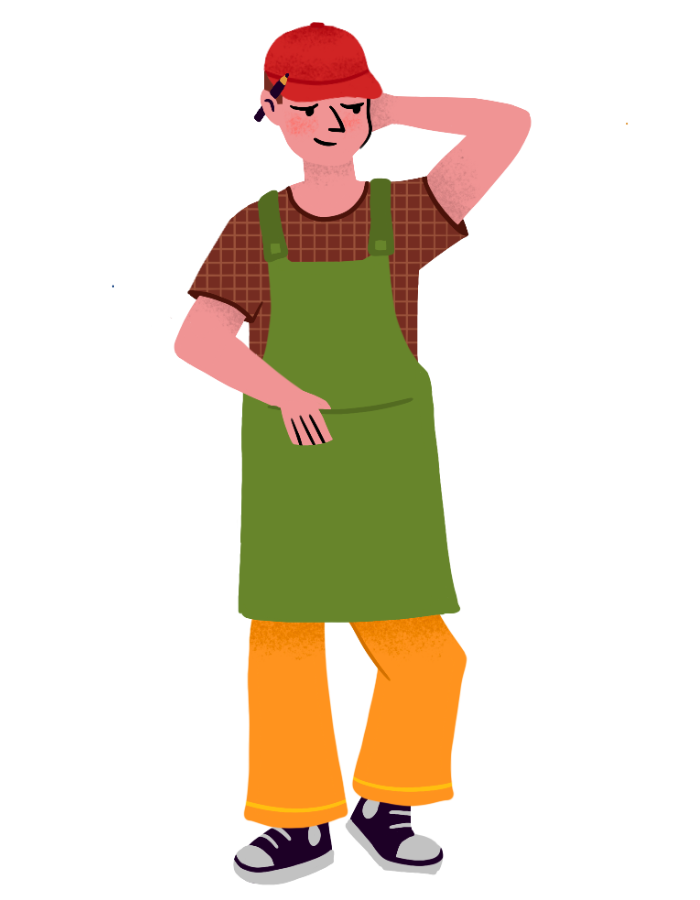

TU BARRIO, TU FERIA
El ecosistema de las ferias barriales en Montevideo presentaba una brecha crítica para el segmento joven. El objetivo del proyecto fue digitalizar una experiencia tradicionalmente analógica, eliminando la complejidad de la fragmentación informativa. Se buscó crear una solución intuitiva que centralizara datos en tiempo real, permitiendo que el usuario tenga el control de su consumo y su tiempo al alcance de la mano.
Tecnologías utilizadas

Figma
ClaudeCode
p5.jsPropuesta estratégica
Las ferias vecinales ocupan un lugar significativo en el tejido barrial, funcionando como focos de encuentro donde se entrecruzan intercambios económicos, interacciones sociales e identidades comunitarias.
Este proyecto no trata de modificar la dinámica de las ferias, sino de reactivarla: la propuesta opera como puerta de entrada al consumo en territorio.
El desafío: Fragmentación informativa y falta de una experiencia de usuario cohesiva.
Mientras que los competidores del sector retail ofrecen experiencias digitales fluidas, la feria carecía de una interfaz unificada, lo que generaba una percepción de obsolescencia.
El reto consistió en estructurar un lenguaje de diseño capaz de convivir con la identidad del Municipio B, priorizando una arquitectura de información clara que resolviera la inconsistencia visual y los problemas de comunicación previos en el territorio.

Públicos
El proyecto se dirige al grupo de jóvenes de 18 a 34 años, que se ocupan de la compra de alimentos.
En función de su relación con el contexto se detectan 3 perfiles.
Comportamiento: Posee una relación nula o escasa con el entorno físico de la feria y el barrio.
Necesidad: Superar la barrera del desconocimiento.
Oportunidad de Diseño: Generar interés mediante una interfaz que presente la feria como un evento relevante, moderno y digno de ser explorado.
Comportamiento: Prioriza la rapidez y la accesibilidad sobre el vínculo emocional. Su decisión de compra es puramente funcional. Buscan optimizar el tiempo y demandan acceso inmediato a la información.
Punto de Dolor: La percepción de que la feria es "difícil" o "lenta" comparada con un supermercado.
Oportunidad de diseño: Enfoque mobile-first. La UI debe destacar la cercanía (geolocalización) y la competitividad de precios, posicionando a la feria como la opción más eficiente y sencilla en su rutina diaria.
Comportamiento: Usuario con valores éticos y de consumo responsable alineados con la soberanía alimentaria. Ya posee un vínculo con el territorio.
Necesidad: Profundizar la conexión y pertenencia.
Oportunidad de Diseño: Retención y Comunidad. El diseño debe ofrecer contenido de valor agregado (historia de los productos, impacto social) que refuerce su compromiso y lo convierta en un promotor activo del sistema de ferias.
Sistema Visual y Lenguaje de Diseño
Se proyectó un sistema visual claro y cautivante, diseñado con una estructura flexible que permite una aplicación coherente tanto en interfaces digitales como en dispositivos territoriales de diversa complejidad. El enfoque técnico consistió en equilibrar la identidad Institucional del Municipio B con recursos gráficos contemporáneos que responden a los patrones de consumo visual de las audiencias jóvenes.
A partir de una paleta que es llamativa y colorida, pero también orgánica y terrenal, se generan superposiciones de tramas geométricas. Estos elementos, en movimiento, permiten construir piezas visualmente potentes que captan la atención en entornos digitales saturados.
Además, introducen una lectura visual de movimiento colectivo, reforzando la idea de un espacio barrial dinámico y en constante transformación.
Se desarrolló un estilo de ilustraciones que aporta una arista humana al sistema, equilibrando la construcción vectorial con la calidez del trazo manual. Estos recursos permiten representar escenas, gestos y dinámicas propias de la feria, humanizando la interfaz.
Los componentes de interacción (botones) también han sido ilustrados, simulando la apariencia de un sticker, reforzando el carácter táctil y cercano de la propuesta digital.






.png)